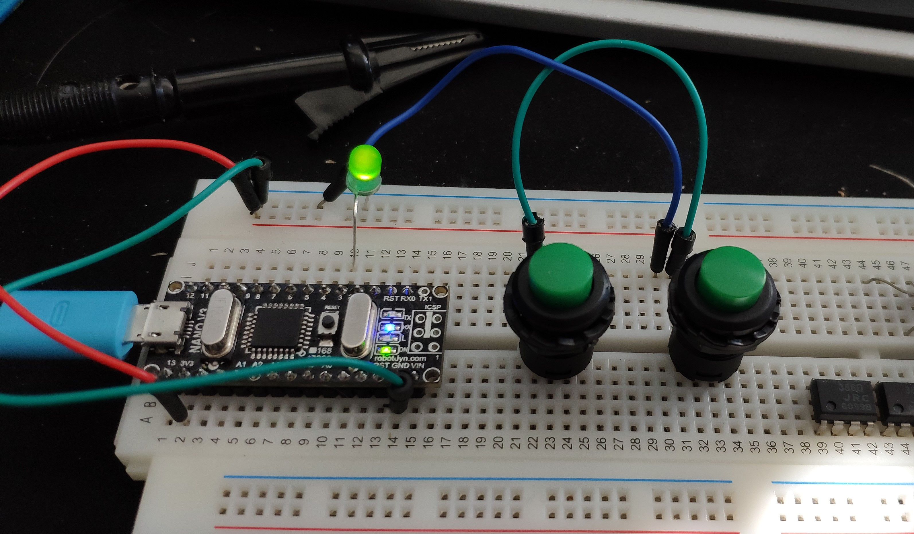

Zoals misschien al gelijk te zien is gebruik ik een iets ander Arduino board. Ik heb zelf al een klein beetje ervaring met Arduino, ik ben namelijk een midi-controller aan het maken. Daarvoor gebruik ik een Teensy 3.2, een iets ander board, maar ik had nog een Arduino Nano liggen thuis, wat praktisch dezelfde functionaliteiten heeft als een Arduino Uno. De kit van tinytronics heb ik ook niet aangeschaft. Ik maak met een vriend regelmatig zelf audio-apparatuur, en had daardoor alle componenten al in huis.


Ervaring met Arduino en Java heb ik echter niet, dus ik vond het al met al een leuke ervaring om dit allemaal te leren.
In het voorbeeld wordt verteld om 2 weerstanden te gebruiken voor de ledjes. In dit geval waren weerstanden niet nodig om een te hoge spanning voor de ledjes te voorkomen. De output van de digital pins is maximaal 40mA. Dit betekent dat het ledje een effectieve weerstand van R = U / I, R = 3.3 / 0.04 = 82.5 Ohm heeft. Zelfs als de digitale pins de maximale 40mA leveren zal de led nooit doorbranden, die kan namelijk maximaal 150 mW aan. Vanuit P = U * I kun je opmaken dat I in 0.150 = 3.3 * I op 45 mA uitkomt, om die reden heb ik geen weerstanden gebruikt.

Voor deze opdracht heb ik een Sinusgolf gebruikt in plaats van een forloop. Ik weet hoe for-loops werken, ik kan ze goed gebruiken, ik weet echter totaal niet hoe een sinusgolffunctie te gebruiken is. Om elke opdracht leuk voor mijzelf te maken maak ik af en toe dit soort keuzes, die het eindresultaat niet veranderen. Bij het onderzoeken van deze functie op de website van Arduino las ik dat de sin() functie een parameter verwacht (in de vorm van een hoek), en daaruit altijd een waarde tussen de -1 en 1 leveren. Ik dacht toen "wat is een variabele die constant verandert over tijd?", makkelijk, dat is tijd. In Arduino zit de functie millis() die de verlopen tijd sinds het programma begonnen is teruggeeft. Door die waarde in de sinusfunctie mee te geven (en te normalizeren door deze te vermenigvuldigen met 2*PI), en te mappen tussen 0 en 128, kreeg het ledje een constant veranderende waarde met het verloop van een sinusgolf. Proef geslaagd!

In mijn vrije tijd vind ik het leuk om aan de slag te gaan met P5.js. Dit is een JavaScript omgeving om in te kunnen "tekenen" en berekenen, een soort JavaScript variant van Processing. In dit programma bestaat ook de map() functie. Ik heb de code van de vorige oefening gebruikt en de mapfunctie gebruikt om de waarde van 0 - 1023 te laten verlopen van 0 - 255. Ik zag dat de ledjes een beetje moeilijk gingen flikkeren af en toe, een simpele delay(10) verhielp dit probleem.
De LDR die ik gebruikt heb is iets anders dan die in de hardware kit, al is het resultaat exact hetzelfde. Ik heb de datasheets met elkaar vergeleken en alle waarden zouden op hetzelfde uit moeten komen. Ik heb bij deze opdracht geen moeilijkheden ervaren.

Wat zou er gebeuren?
In de proef van wat er zou gebeuren als de 2 weerstanden LDR's worden dacht ik dat het logisch zou zijn dat het voltage gehalveerd wordt. De LDR’s zullen praktisch dezelfde weerstand hebben, dus gaan de elektronen net zo graag naar Vout als naar gnd, het gevolg is de helft van het voltage.
Berekenen
Voor het berekenen van de voltages in de 4 scenario's heb ik een multimeter gebruikt. Zo kon ik direct het voltage meten in plaats van de door de Arduino gemeten waarden. Bij het uitvoeren van de tests bleken al mijn verwachtingen te kloppen.
Video
In de onderstaande video laat ik mijn testresultaten zien en vertel ik waarom de waarde's zijn als gemeten.
Yess Processing, wat een topprogramma! Het was even ontdekken hoe het ook alweer werkte vergeleken met P5.js (JavaScript variant), maar ik had het snel genoeg onder de knie. Ik kreeg mijn videocapture niet werkend, maar ik heb een wolk van particles gemaakt die sneller bewegen en groter worden afhankelijk van het licht. Hoe feller het licht, hoe actiever de particles zijn.
Ik was de serial aan het lezen en kwam erachter dat als je de waarde van de buttons bij elkaar optelt, het de ifstatement een stuk makkelijker maakt. De waarde moet namelijk 1 zijn, van beide buttons opgeteld. Dan maakt het niet uit welke button het is, en moet het minimaal 1 zijn. Zijn ze allebei ingedrukt dan heb je een waarde van 2, en dat is te hoog. Dus het werkte.
Ik heb in mijn setup andere buttons gebruikt omdat ik deze nog had liggen en ze toch wel 10x vetter zijn dan die kleine knopjes.
To be added... (blew up the motor when making a physical light-tremelo effect)
To be added... (blew up the motor when making a physical light-tremelo effect)
Hoera, geluid! Voor deze opdracht heb ik "the lick" gebruikt. “The lick” is een soort grapje onder muzikanten. Het is een kort stukje muziek waar de muzikanten absoluut niet op zitten te wachten, maar het juist daarom leuk is om je bandleden ermee te irriteren. Het eerste wat ik heb gedaan is the lick omzetten naar de noten qua toonhoogte, lengte, en desbetreffende frequentie.
Vervolgens was het kijken hoe ik moet berekenen wat een kwartnoot en een achtste noot is, op basis van een gestelde bpm (beats per minute). De lengte van de toon (en de delay) kon zo afgestemd worden door een tempo (bpm). Het resultaat is in het audiofragment hieronder te horen.